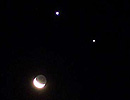

Nụ cười của trăng và sao trên nền trời

Mặt trăng lưỡi liềm kết hợp với sao Mộc và sao Kim hai bên tạo thành hình mặt cười đêm qua. Hình ảnh kỳ thú này có thể quan sát được rất rõ ở nhiều nước trên khắp thế giới, trong đó có các quốc gia Đông Nam Á.